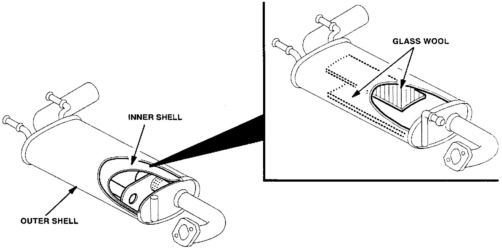

Main Silencer - Rattling Noise
Bulletin No. 011/98Issued 09/30/98
Revised
Category
F (01)
Applicable Model/s
1999 Miata with A/T
Subject
RATTLE NOISE FROM MAIN SILENCER
APPLICABLE MODEL(S)/VINS
1999 Miata with automatic transmissions and VINs lower than JM1 NB353* X0 119466.
DESCRIPTION
A rattling noise may be heard from the main silencer between 1,000 - 1,300 rpm in D or R range. This noise is caused by exhaust gas pressure fluctuation inside the main silencer causing the inner shell to vibrate, resulting in the rattle noise. A modified part with glass wool between the inner and outer shell of the main silencer is now available to resolve this concern.

Customers complaining of this concern should have their vehicle repaired using the following procedure.
REPAIR PROCEDURE
1. Verify concern.
2. Replace the main silencer with the modified part. Refer to the Workshop Manual section 01-15.
3. Verify repair.
PART(S) INFORMATION
Part Number Description Qty. Notes
BPM1 40 100D Main Silencer 1 --
WARRANTY INFORMATION
Note
^ This information applies to verified customer complaints on vehicles covered under normal warranty. Refer to the SRT microfiche for warranty term information.
Warranty Type A
Symptom Code 82
Damage Code 97
Part Number Main Cause BPM1-40-100D
Quantity 1
Operation Number / Labor Hours F0210XRX / 0.4